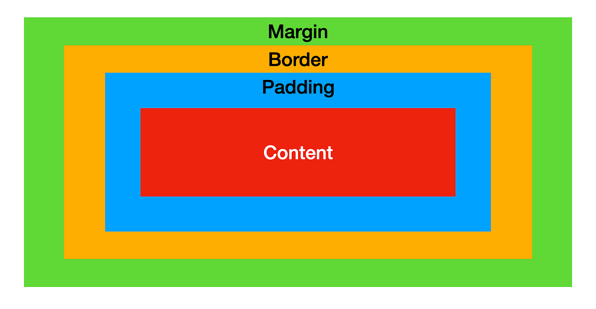

Now, if I put everything in CSS in borders, you'll see that they default to being spaced out with boxes. Links get boxed separately.
The box is made of padding margin, border and the actual content.
Padding is the space between the box border and content. Padding gives the content "inner space."
Margin is the space between the border of the box and adjacent ones. Margin is for spacing out multiple elements.
Interestingly enough, the bigger margin between two elements will be picked, and the smaller margin will colappse.
Border is the space between the margin and the padding. It's the "breathing" space of the inner space.
Elements of the block display type, however,
will stack atop each other, starting new lines.
Two elements that really don't have anything.
Div is for dividing, a block element
Span is an inline element...